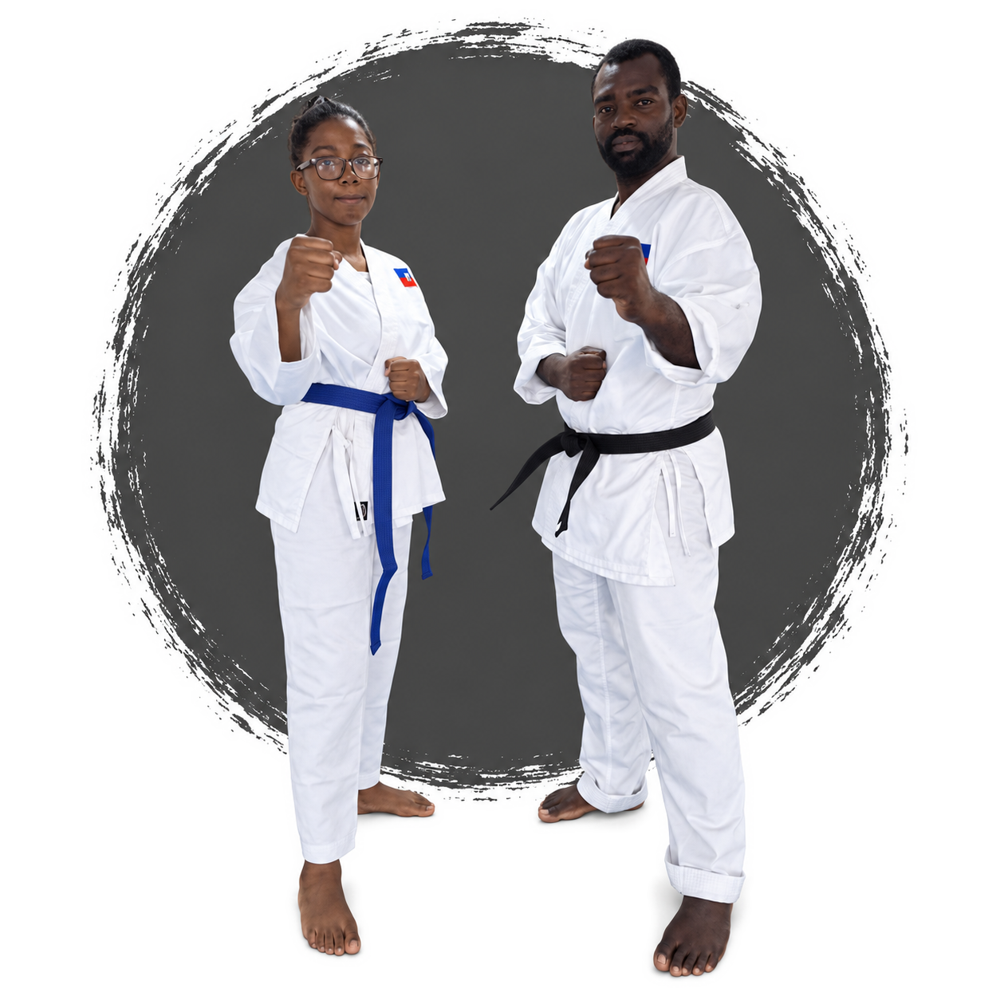
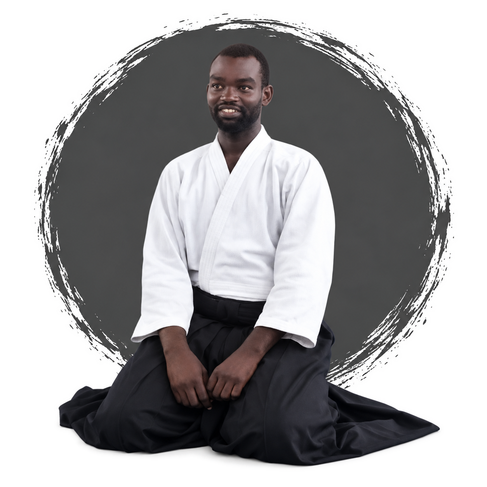
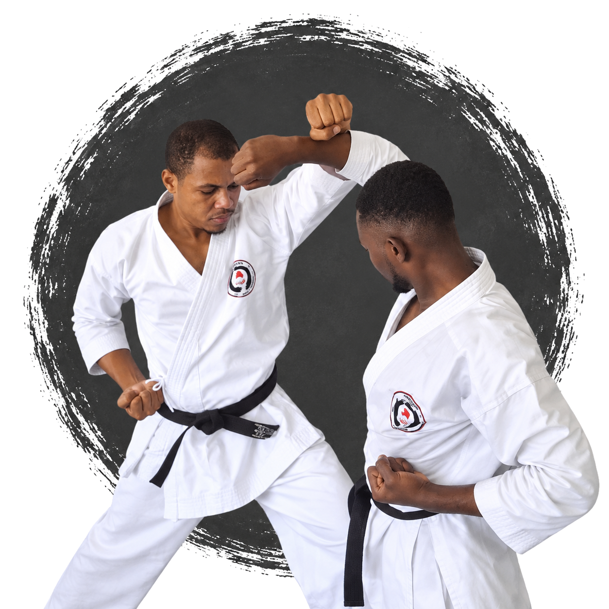
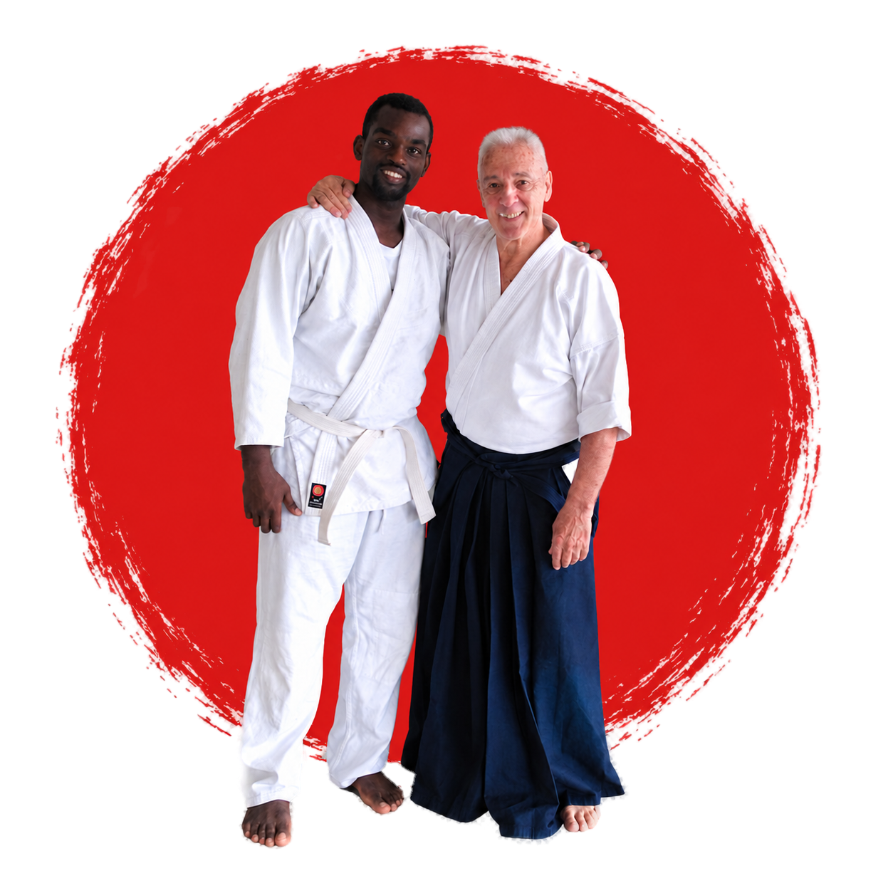

École d'Arts Martiaux Traditionnels
MUSHIN
DOJO
Cours d'Aikido et de Karaté en Haïti. Défense personnelle, discipline et valeurs pour enfants, jeunes et adultes, dans un esprit fidèle à la tradition martiale japonaise.
Le Mushin Dojo est né de la passion pour l'aïkido et le karaté, mêlant discipline japonaise et esprit haïtien. Nos cours s'adressent à tous les âges et tous les niveaux, du débutant au pratiquant confirmé.
Nous cultivons respect, courage et harmonie à travers la pratique martiale, guidés par des instructeurs passionnés.

ÉCUSSON
AIKIKAI RD
AIKIKAI RD
Notre Histoire
Discipline Japonaise, Esprit Haïtien
Mushin Dojo est né de la passion pour l'aïkido et le karaté, mêlant discipline japonaise et esprit haïtien. Notre mission est de transmettre ces deux arts avec exigence et bienveillance, à tous les âges et à tous les niveaux.
Nos valeurs fondamentales — respect, courage, esprit et harmonie — guident chaque cours, chaque technique et chaque échange entre élèves et instructeurs. Le dojo est fier de son affiliation avec Aikikai República Dominicana, qui renforce notre engagement envers l'excellence dans l'enseignement des arts martiaux.
En Savoir Plus


Notre Philosophie
Au Mushin Dojo, la pratique de l'aïkido et du karaté se fonde sur la discipline, le respect et la recherche de l'harmonie intérieure. Ce n'est pas seulement de la défense personnelle — c'est un chemin de vie guidé par les principes du Bushidō, le code du guerrier samouraï.
Les sept vertus du Bushidō
- Gi (義) — Justice ou Droiture
- Yu (勇) — Courage
- Jin (仁) — Compassion
- Rei (礼) — Respect, courtoisie
- Makoto (誠) — Honnêteté, sincérité absolue
- Meiyo (名誉) — Honneur
- Chūgi (忠義) — Loyauté
Dojo Principal
[Adresse complète, ville, Haïti]
Numéros de Contact
Téléphone : [+509 __ __ ____]
WhatsApp : [+509 __ __ ____]
Courriel
[info@mushindojo.net]
Programmes de
Formation
Des cours d'aikido et de karaté du lundi au samedi, adaptés à chaque étape de la vie :

Aikido Adultes
En Savoir Plus →
Karaté Enfants
En Savoir Plus →
Karaté Adultes
En Savoir Plus →Nos
Événements
Des rendez-vous réguliers pour approfondir la pratique et vivre l'esprit du dojo :

Séminaire Aïkido
Un week-end intense pour approfondir les techniques d'aïkido avec Sensei Alejandro Dominguez.
En Savoir Plus →
Stage Karaté
Ateliers pour enfants et adultes, alliant discipline et plaisir dans chaque geste.
En Savoir Plus →
Camp d'Été
Une immersion de plusieurs jours pour vivre l'esprit martial et créer des liens forts.
En Savoir Plus →
Bénéfices de l'Aikido et du Karaté
L'aïkido et le karaté sont bien plus que des disciplines physiques — ils transforment ceux qui les pratiquent :
- Améliore la condition physique et la santé globale
- Développe la discipline, la concentration et la maîtrise de soi
- Renforce la confiance et la sécurité personnelle
- Enseigne la défense personnelle sans recourir à la violence
- Favorise des valeurs de respect, d'harmonie et de vie en commun pacifique
- Réduit le stress et améliore le bien-être émotionnel
Autodiscipline
Force
Défense efficace
Ce Que Pensent Nos
Instructeurs ?
“Discipline et Harmonie Intérieure”
Sensei Alejandro Dominguez a commencé l'aïkido à l'âge de 12 ans, développant une passion profonde pour la discipline et la philosophie martiale. Il enseigne avec patience et rigueur, guidant chaque élève vers l'harmonie intérieure. Il pratique et enseigne au Mushin Dojo en Haïti depuis 2010, et s'est formé de 2015 à 2019 auprès d'Aikikai RD (République Dominicaine) aux côtés de maîtres japonais.
Sensei Alejandro Dominguez
Instructeur Principal, Aikido


“[Phrase représentative à venir]”
[Biographie et citation de Worlkings Belotte — instructeur co-listé sur le site actuel du dojo, détails à confirmer.]
Worlkings Belotte
Instructeur, [Aikido / Karaté]
Nos
Horaires
Les cours d'Aikido et de Karaté se tiennent du lundi au samedi, adaptés aux enfants et aux adultes, débutants ou confirmés.
Aikido
[Jours à préciser]
[Heure à préciser]
Karaté
[Jours à préciser]
[Heure à préciser]
Écrivez-nous
Réservez Votre Cours D'Essai
Parlez-nous un peu de vous et nous vous contacterons pour organiser votre première visite au dojo. Vous pouvez aussi nous écrire directement :
Tél : [+509 __ __ ____] · Email : [info@mushindojo.net]